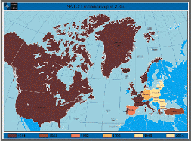

99 [her luminous eyes distended in horror at the spectacle of a nuclear mushroom cloud]
Oh, Max -- what a terrible weapon of destruction.
Max: Yes. You know, China, Russia, and France should outlaw all nuclear weapons. We should insist upon it.
99: What if they don't Max?
Max: Then we may have to blast them. It's the only way to keep peace in the world.
From the Get Smart Episode "Appointment in Sahara," 1967.
We live in a trans-parodic age. The imagination of the most gifted satirist fails when trying to keep ahead of our descent into surrealistic lunacy.
Witness the fact that what was parody 41 years ago on Get Smart – the idea of nuclear non-proliferation through pre-emptive nuclear genocide – is now the established doctrine of the Bush Regime. Within a few weeks, it could be the official policy of the NATO pact, as well. And Russia, which in defiance of most expectations may soon be a more prosperous nation than the Bushified United States, has openly embraced the lethal logic of nuclear pre-emption as well.
For several years, the Bush White House, its political allies, and its media courtesans have openly and blatantly threatened Iran with a pre-emptive nuclear attack if Tehran doesn't abandon its nuclear program. The threats have generally come in the form of a warning that no “option” will be left “off the table,” which clearly means that the prospect of nuclear aggression is in play.
George Bush and his adult handler have been studiously coy about spelling out what is meant by “all options.” Five Republican presidential contenders have echoed that view. One of them, Duncan Hunter (who has withdrawn from the race) was too thick to understand the need for euphemism, and spelled out his willingness to use tactical nuclear weapons in a first strike against a recalcitrant Iran. In this respect, as in so many others, Ron Paul -- who has condemned Washington's embrace of pre-emptive war -- has distinguished himself as the only truly sane individual seeking the White House.
The nuclear threats grow less subtle the lower we go in the GOP's hierarchy of social control. Take the case of radio host and purported comic Dennis Miller, who just yesterday (January 21) spoke of using strategic weapons, including neutron bombs to “back Israel's play” when it comes time to “kill Ahmadenijad” and any successor to the Iranian president who might be considered unacceptable.

What can I tell ya, it's great to be here in Nuremberg. Like I always say, nobody throws a party like the Nazi Party! Why don't you give yourselves a hand -- oh, yeah, sorta difficult to do while doing that salute; it's a bit like trying to parse Wittgenstein while keeping stride with your Wandervogel group....
Miller, it must be said, is literate and blessed with a certain wit, and is entirely unburdened by ethics. Had his career begun in the demimonde of Weimar Germany, rather than its 1980s equivalent, Miller would have bobbed to the surface at a Nuremberg Rally, warming up the crowd with snarky jokes about the menace of International Jewry.
It's to be expected that the cultists, catamites and knob-polishers who make up the Republican Right would faithfully echo the demented pronouncements of their Dear Leader, even to the point of endorsing nuclear aggression. It is a little unexpected to see the same position being codified as official policy for the North Atlantic Treaty Organization (NATO), the bastard regional offspring of the United Nations and the world body's unofficial military arm.*
A committee composed of “five of the West's most senior military officers and strategists,” including former joint chiefs chairman John Shalikashvili, has endorsed the idea that the threat of a nuclear first strike must be used “to try to halt the `imminent' spread of nuclear and other weapons of mass destruction,” reports the London Guardian.
This proposal comes as part of a “radical manifesto” for a “root and branch reform of NATO and a new pact drawing the US, NATO and the European Union together in a `grand strategy' to tackle the challenges of an increasingly brutal world....” It transliterates the Get Smart doctrine of containing nuclear proliferation through nuclear genocide from parody into policy. My first impression on reading about that proposal was to wonder if Mel Brooks, Buck Henry, Arne Sultan, and the rest of the comic brain trust responsible for Get Smart had covertly drafted the NATO reform proposal.
The NATO alliance is one of the most misunderstood political entities in human history. For decades it was perceived as a defensive bulwark against the Soviet-led Warsaw Pact. Yet the dissolution of the eastern Pact didn't result in the dismantling of NATO. Instead, those in charge of the alliance set out in search of new threats to justify its continued existence, while beginning to absorb the military assets of countries that had once been part of Warsaw Pact, and moving its “defensive” perimeter right up into Moscow's grille.


The NATO Blob: All of the countries colored anything but blue are members of the alliance, with more to come. Some neo-"Conservatives" have suggested that membership should be extended to Israel.
After half a century in which it never fired a shot, NATO celebrated its 50th anniversary by conducting its first military exercise – the 78-day terror bombing of Yugoslavia, for the purpose of ending an anti-Albanian “genocide” that was as phony as the Iraqi WMD arsenal. Rather than repelling Soviet armor, NATO was attacking Serbian bridges, hospitals, power plants, and television stations -- even the occasional column of Albanian refugees displaced by NATO's attacks on the Serbs. Eventually the Serbs were forced to concede control over Kosovo to a radical Muslim terrorist group that was chummy with both Osama bin Laden and the Albanian mafia, and – of course – the CIA.
Now we're told by the authors of the NATO “reform” blueprint that the option of a nuclear first strike is justified because the alliance has to gird its loins to confront “political fanaticism and religious fundamentalism ... [as well as] international terrorism [and] organized crime....” The so-called Kosovo Liberation Army, the beneficiary of NATO's terror bombing of Serbia, embodies all of those attributes.

NATO's attack on Serbia, a nation with religious and cultural ties to Russia, nearly led to the shooting war with Russia we've thus far avoided. That war could easily have erupted had Sir Michael Jackson, the unfortunately named British General in charge of securing the Pristina airport, been as short-tempered as NATO Supreme Commander Wesley Clarke in dealing with the 206 Russian paratroopers who “secured” that facility. Clarke wanted Jackson to remove the Russian troops forcibly; Jackson agreed that the Russians had to leave, but he preferred to negotiate their exit rather than “starting World War III.”
General Jackson, whose troops would have been the ones exchanging fire with the Russians, exercised a field veto over the orders he received from Wesley Clarke. The NATO “reform” proposal, which envisions “faster action through an end to national vetoes” and an “end to national caveats,” would probably foreclose the similar exercise of discretion by field commanders in the future. This isn't a comforting thought when coupled with the idea that NATO will probably get into the business of counter-proliferation through nuclear aggression.
As mentioned above, NATO has moved its sphere of operations into Russia's “near abroad,” a development that must be looked upon with both frustration and anger by Moscow. Putin's regime has a decent intelligence capacity (which we'd expect with a “former” KGB officer and his cadre of siloviki in charge).

Oh, great: As if we didn't have enough to worry about, Russia has apparently entered an alliance with the Spaceballs.

So it's not a surprise that Moscow apparently scooped the western press on the new NATO “reform” document, and wanted to fire a rhetorical warning shot at the western Alliance. At least that's how I read last week's announcement by Gen. Yuri Baluyevsky, Russia's military chief of staff, that in defense of “the sovereignty and territorial integrity of Russia and its allies,” military force would be used “preventively, including with the use of nuclear weapons.”

Accordingly, Russia has the nuclear safeties off and is prepared to throw down in order to defend the “territorial integrity” of its allies – a category that might include Iran.
For its part, NATO has the safeties off and is prepared to go nuclear against “rogue states,” a category that, in practice, refers to countries that don't bend to Washington's will – like Iran. NATO is already involved in "out-of-area" action in Afghanistan, and there have been serious discussions about deploying NATO forces in Lebanon or even the West Bank, venues that would offer plentiful opportunities for "pre-emptive" action of all kinds.
So the odds of a nuclear exchange in the not-distant future are growing shorter -- and the incineration of millions would be treated as a grim necessity -- in the words of the NATO reform proposal -- "to prevent the use of weapons of mass destruction."
Yes, that's what the document actually says. So George Orwell shakes hands with Maxwell Smart, and I'm starting to contemplate the wisdom of building a backyard fallout shelter.
________________
*NATO was designed as a political and military subsidiary of the UN. Foreign Affairs Outlines: Building the Peace, a State Department document published in Spring 1949 explained that NATO was designed to "bring about world conditions which will permit the United Nations to function more efficiently." Secretary of State Dean Acheson (CFR) elaborated on that view in a March 1949 speech in Washington: “[NATO] is designed to fit precisely into the framework of the United Nations and to assure practical measures for maintaining peace and security in harmony with the Charter.... The United States government and the governments with which we are associated in this [NATO] treaty are convinced that it is an essential measure for strengthening the United Nations....”
Dum spiro, pugno!
30 comments:
NATO's charter (posted on its website) clearly defines it as a defensive alliance, as summarized in the well-known "an attack on one is an attack on all" formulation.
Since the Soviet Union collapsed, effectively ending NATO's mission, it has descended to ever-increasing levels of lawlessness to justify its continued existence.
No sanction can be found in the NATO charter for the "out of area" operation kicked off in Kosovo. It was flatly illegal. Then NATO advanced to an even more outrageous and disastrous, "far out of area" operation in Afghanistan. As M.K. Bhadrakumar has so ably analyzed in the Asia Times, NATO is now hearing the "noise before defeat" in this ill-conceived, Fubar mission from hell.
http://tinyurl.com/3afvpv
But upgrading the purported defensive alliance to a nuclear first-strike capability represents an order of magnitude escalation in defiant lawlessness. Even if some of NATO's constituent members retain such a doctrine (which is a separate question), the pretense of a defensive alliance can no longer be maintained when it can initiate lethal aggression (including nuclear bombing) without being attacked.
Of course, the U.S. has a leading role in NATO, so the multinational authorship of this heinous proposal doesn't disguise its U.S. backing. As the rule of constitutional law collapses domestically in the U.S., so does the enforcement of treaty terms abroad. NATO has slipped its traces and become an unaccountable, nuclear-armed rogue militia.
The world will not be safe until NATO is buried with a stake through its heart -- an outcome which it may engineer on its own through its stunning ineptitude in Afghanistan, the eternal graveyard of imperialist fantasies.
Well, the definite advantage of a preemptive first strike is that you don't have to bother to pretend to look for the evidence justifying it.
Or just as likely, we're lucky that Gen. Sir Michael Jackson had the good sense to be more afraid of 206 Russian paratroopers than he is of unarmed civilians. Let's not forget that back in January of 1972, a young Captain Michael Jackson was the second-in-command at the notorious Bloody Sunday massacre, in which British paratroopers mowed down fourteen unarmed Irish protesters in the streets of Derry, including six who weren't yet 18 years old.
But of course, I suspect the Russian paratroopers wouldn't have reacted by waving white handkerchiefs and yelling "Don't shoot!" like the unarmed Irish teenagers that day did.
The Europeans are smarter than this. I suspect they're playing a little wait and see until Bush leaves, and then they'll start voicing their unhappiness with putting their twig and berries on the line for Uncle Sam's imperial ambitions not long after. They'd better, for their own sakes.
Giving NATO access to first-strike nukes is like giving Barney Fife a crack pipe and a grenade launcher.
Toto, I don't think we're in Mayberry no more.
Let's not forget a much earlier NATO "far, far out of area" venture in the Forgotten War, the UN/NATO "police action" in Korea in 1950-53. The other "police action" in Vietnam was fought under the authority of the now defunct SEATO, which was also another regional subsidiary of the United Nations.
It amazes me how Americans could ever put up with their so-called leadership sending their sons as cannon fodder to fight in pointless UN "police actions" which cost 54,000 US lives in Korea and 58,000 lives in Vietnam, not to mention the hundreds of thousands of civilian deaths in those two hapless nations. Where and how does one find the motivation to fight in such remote pointless wars that have nothing to do with actual US defence and everthing to do with the consolidation of power for the entrenched Anglo-American Power Elite?
Now some pointy-headed American with a furrowed brow may respond by saying those UN conflicts were really necessary "to fight da commies". Oh, really? Your globalist-minded ruling class with their international financier and industrialist allies have been funding those commies since 1917; and while your soldiers were fighting and dying in Vietnam, your noble leaders were aiding and abetting communism by trading with Vietnam's chief armaments suppliers of Eastern Europe and Soviet Russia -communist countries all. Somehow the US oligarchy is far too aloof in fighting communism ninety miles away in Cuba, or somehow mysteriously becomes too inept in the Bay of Pigs fiasco to carry out a simple military operation within close proximity to its line of departure and logistics base, but somehow Vietnam, located on the other side of the world, was such an urgent priority that had to be contained supposedly under the Power Elites' policy ruse known as the Kennan Doctrine.
Today it's no longer an encompassing "communist threat", but a ubiquitous "terrorist threat" that draws once again a UN/NATO force to different Asian regions for yet another encore. And who, pray tell, provides the brunt of the cannon fodder for the UN and its regional affiliates? You do! American armed forces personnel always make up around 98% or more of the UN fighting forces.
What's wrong with you people? Why are some of you so dense that you can't see that you've been had?
With Iran taking the stage as the latest manufactured threat to
America and the world, will we be
manipulated into yet another jingoistic war frenzy, even if it means dire nuclear consequences?
It's time to rage against the machine -and its Pratt House, Chatham House and White House operators.
R. Wiesinger
Lincolngrad,
USSA
What's wrong with you people? Why are some of you so dense that you can't see that you've been had?
In addition to sociological stupidity on a scale unmatched in any other era or civilization in human history, contemporary Amoricons also suffer from delusions of their own infallibility so deeply entrenched as to be irremediable. Arrogant pride and deep-seated fear also play a part. Who, after all, is going to readily admit that they've been a patsy their entire adult life for a system that has sucked the economic life blood out of them and made them dependent on the machinery of state for every aspect of their essential well-being, directly or indirectly, and that every belief that has been inculcated into them since early childhood is a lie? The very idea that his entire existence is based on a fraud is simply too horrible for the average lemming to contemplate. It’s much easier to just go with the flow and remain one of the glassy-eyed, trusting, sieg-heiling state-worshippers who believes in national might (and the pseudo-Christianity that is the “great national religion”) ueber alles and who trusts the very people who enslave them to solve all of their problems than to exercise introspection and start thinking for oneself.
PEACE THROUGH WAR, BABY!!! PEACE THROUGH WAR!!!
Yeah...definitely like war...yeah...definitely not wearing any underwear either...definitely not...but I like war though...alot...yeah...
war... like it...lots of dead soldiers...definitely... conscription...death sentence...definitely.
Yeah.
What else needs to be said? I think Rainman pretty well sums it up.
It's a treat to come to this site and read the pieces and comments. I've never been to an AA meeting, but I can imagine that this must be how an alcoholic feels after attending one.
Let's face it, it's over for the US. We all know it. There is no fixing this. Economically, socially, spiritually, and most certainly politically amerika is rotten to the core. The question is, "Do YOU have a plan?" If not, you had better start considering one because if you don't one will be provided for you.
A dimes worth of history says we are on borrowed time. The lockdown is coming.
God bless you and keep you writing. I pray the scales will come off the eyes of every Christian I know!
reason to worry.
http://www.prosefights.org/thecanadian/thecanadian.htm#gotstarted
As always well written.
My Uncle was second in command at Andrews Air Force from the late 50's to the early 60's. One summer when visiting, I was 7 or 8 years old at the time, I was within 10 feet of Nixon and Khruschev when we watched their arrival. I thought Krhuschev doesn't look like a monster (already being indoctrinated), he looks like Grandpa!
That was the summer my Uncle was working on his bombshelter, a damp and musty 8 x 10 room made of concrete under his house in Camp Springs which was within the blast radius of Andrews.
Then and there I realized death would be better than living in that for months (where months of food and water would come was unclear).
Next summer when we returned during our annual pilgrimmage the bomb shelter project had been mercifully abandoned and it was relegated to being a musty hole.
How sad is it that an 8 year old (and a stunningly poor student in public school) realized what a facade and folly it all was.
We are way past the Industrial Age, firmly rooted in the Age of Silliness where knowledge is at a discount, sensation a premium. A whole civilization predicated on becoming like Wednesday in the Mickey Mouse Club where anything goes.
Excellent and timely post sir. Yes, I too became quite surprised at the audacity of the Western 'civilized' representatives.
What concerns me is that such hubris is being watched by the rest of the World. Lest we forget that the Chinese have nukes too. As does India and Pakistan.
With such blatant disregard to International Law and COMMON SENSE, these 'leaders' are starting to sound like lunatics escaped from an asylum.
The question here is: why is this type of behavior being accepted as rational? We, as citizens of these 'modern and civilized' nations, should be appalled by these announcements.
I fear that 'the powers that be' are engineering a major shift of the socio-political arena. Personally, I believe that a global war is planned in order to 'phase out the old and bring in the new...world order...' And no, I don't fancy tin foil hats...
Re: liberranter
You are so right about that. I'm a former Soviet sitizen. It's been 19 years since the break up and even after living for 10 years in North America i still tend to think that it was greatest country. Even after learning so much about the state, stalin, lenin, murders, etc... Some things I still cant believe even now...
HELLO! I just found your blog today and have bookmarked and plan to become a regular reader. Kudos to you, this is a brilliant piece. And the comments are nearly equal in their brilliance. I look forward to reading and commenting in the future (however long that may last).
Aaron -- Thanks for the kind words, and welcome! And I certainly share your assessment of the quality of the contributions to the comment section of this blog.
Mr. Grigg, my post is only indirectly related to your latest article, but please respond. With our malevolent Uncle Sam still wanting our sons to register for the SSS, what does one do? My eldest of three sons will be 18 in seven short years. I understand that, if convicted for failing to register, he may be subject to time in a government cage AND a $250,000 fine. Tell 'em to go to hell? Move to Switzerland? What do you think?
Anthony, I wish I could offer a "Quantum of Solace," as it were, regarding the impending return of military slavery. I'm already on record stating that my children will NOT be drafted, and I know what keeping that promise might entail.
I didn't register for SSS until well after my 18th birthday, and then I did so at the behest of a religious leader (which just goes to show, you know?). As long as it's possible to avoid registering, I will encourage my children not to register and do whatever I can to keep them out of Leviathan's clutches.
It's likely that by the time my oldest son is of driving age, Idaho will have followed the lead of several other states by making draft registration part of the driver's license application. It wouldn't surprise me to see this go national when the time comes to revise REAL ID.
Another unsettling development: Thanks to proto-NAU-related agreements, it's now all but impossible to find sanctuary from conscription in Canada. And the new "border security" measures are making it increasingly difficult to leave the country, which cannot be incidental to this discussion.
So, as I said, there's precious little I can offer by way of comfort on this subject.
Thanks Mr. Grigg, for your comment on SSS. I will be purchasing 'Liberty in Eclipse' as soon as I can locate a copy for sale on the internet, even if it means Homeland Security may start watching me closely!
Dear Mr. Grigg,
You run a remarkable site. Your wonderful essays seem to attract literate, thoughtful, and coherent commentators, many of whose postings provoke real thought and insight. Marvelous.
I love your way with words. "George Bush and his adult handler..." captured a wealth of derisive imagery in just a few words. And "The Bush White House, its political allies, and its media courtesans..." describes the MSM to a tee, as painted whores pretending to the world to be women of quality while being screwed by the monarch.
As a friend remarked to Oscar Wilde upon hearing one of his brilliant witticisms, "Oh Oscar, I wish I had said that." To which Oscar replied, "Never mind, you will dear boy, you will." I shall remember these gems of yours and use them occasionally, with your permission.
War used to be called the sport of Kings. It certainly was not sport for those who had to do the bleeding and dying. Now that we have no Kings, I suppose today it is the sport of Presidents. Rather like golf. Or, if one is a Prime Minister, like croquet. Certainly all very genteel and pleasant. Especially when one's Daddy has gotten one a posting in the Texas Air National Guard to which one occasionally shows up between drunken binges, or if one has received five draft deferments as a first instalment payback for being a team member, the final payment being the job of Vice President and Chief Looter Of The National Purse.
Vladimir Putin and Hu Jintao are real men. Mr. Putin is a Judo master, and both he and Hu Jintao have no doubt read Sun Tzu: "Never let your enemy choose the field of battle. The wise general will choose where and when he meets his enemy. Make your enemy think you are weak where you are strong, and make him think you are strong where you are weak."
Why should these nations try to fight us militarily? It is fully within their power to utterly destroy the USA economically without firing a single shot. When the US and its allies collapse economically, our ability to wage war and sustain it will be zero. We make nothing any more in this country. If Russia should refuse oil and gas to Europe, and China should refuse motherboards and memory cards to the USA, how would we and our allies fight a war? If they dumped our currency, how would we afford our food, our energy, and all the foreign goods on which we have come to depend?
And yet, these mature men of great wisdom refrain from such irrevocable antagonisms, even in the face of petulant and childish tantrums, infantile rages, and dire threats from America, and the silent acquiescence of our allies. The patience and restraint of Mr. Putin especially is truly remarkable, and should not be foolishly mistaken for fear or weakness. Remember Sun Tzu.
As one of your commenters said: "Contemporary Amoricons also suffer from delusions of their own infallibility so deeply entrenched as to be irremediable." If Sun Tzu was facing such an enemy, he would dance a Chinese jig for joy. Look where this attitude has gotten us to in Iraq. And yes, it WAS the fault of all those neocons and their tens of millions of acolytes who believed Amoronica was unbeatable. (Again....We never learn....Definition of insanity. Or cretinism.)
It comes from being spoiled brats, who always got everything we wanted and never suffered the slightest need or disappointment. Oh, we were SO hurt by 3,000 dead on 9/11/01. My Lebanese friend tells me 18,000 people died in one month in Beirut in 1982, when the Israelis would demolish whole blocks of apartments, deliberately not letting a single person escape, because they had had a rumor Yassir Arafat was inside. They did it over and over again. 18,000 civilians in 30 days. And this in a nation of six million, not 300 million like us. Life went on, they coped, they laughed, and they loved, in the midst of a bloody war. My friend had to carry water up 6 floors from the street, and shopping for food was risking death. We invincible Amoricons are pussies and babies when it comes to war. Nobody takes us seriously any more. The only reason they don't laugh at us is because they are afraid we will do something foolish.
Chris Taylor
Arlington, VA
I received a lengthy, exquisitely written, and most fascinating letter from an individual whose contributions to the comments section have been of similar quality. At the risk of offending the rest of you, I'd like to address some comments to him, beginning with a request for an e-mail address.
I'm indebted to you for your fascinating observations about the deeper roots of our nation's Anglo-Saxon heritage. That was a very edifying discussion, as were your comments about the ethnic and cultural tributaries that created modern Russia.
Mr. Putin is someone for whom I have a certain ambivalent respect and even an element of envy: He is a capable, sober, accomplished leader, even if he's not the dashing "Stirlitz"-style action hero depicted in official propaganda. And I have to admire the guy's composure in the face of several years of relentless provocations from Washington.
There's no evading the fact that he is a hard case, and just as little point in denying that he is an authentic Russian patriot who is much admired by his countrymen. Your description of Putin's forbearance reflecting a desire that America's ruling elite "come to [its] senses" strikes me as very credible, as does the statement that he likes Americans as people.
I've never met a Russian I haven't liked and respected. Some of them admire Putin a great deal; others (including a very talented young businessman mentioned in my blog a while ago) are terrified of him, for what appear to be very plausible reasons. Both of those assessments may very well be correct.
It would be very helpful to me if you could put me in touch with some of the people who have met and dealt with Mr. Putin.
There's a great deal more in your fascinating letter I'd like to discuss, but in the interests of time (I'm trying to get ready for church), I'll simply thank you for sharing your insights with me.
How do Americans, considered to be the richest and smartest people on earth can even countenance the use of Nuclear weapons as a pre-emptive measure against non-compliant nations are beyond my understanding.
Do they think they are invincible and bullet proof?
In an all-out nuclear war, Americans have the most to lose for they have more of the world's goods, resources and money than anyone else.
Those who died first in a nuclear holocaust, are the lucky ones while those remaining will suffer the most excruciating pain and slow death with their skin erupting with all manner of sores and diseases and being slowly poisoned by the very air they breathe and the water they drink. It this does not finish off the human race, the ensuing nuclear winter will certainly finish the job.
Is this the scenario most Americans want? They will certainly get this if they will, like lemmings follow their current president into pre-emptive wars one after the other and threaten others with their awesome cache of nuclear weapons of mass destruction.
What mad world vision do we have in an enlightened America?
personally I have no problem with Israel joining NATO -- just as soon as the US is OUT!
If you are truly concerned about the nuclear possibilities, go to oism.org (Oregon Institute of Science and Medicine) and search for Fighting Chance - a true 'civil defense' manual
I have a son as well and absolutely refuse to allow him to serve as imperial cannon fodder in the never-ending wars. I did some research and New Zealand looks like a really nice place. They rank #1 in anti-corruption. Unlike here, their European-Indian wars were very short in duration and they still have a very sizable native population. Their national rugby team even performs a ritual native dance at the beginning of every match, in honor of the land's heritage.
My point is, if you live in a house in a bad neighborhood. Rather than trying to rehabilitate all of your neighbors it is far simpler to move to a better area. There is no shame in simply giving up and moving to greener pastures. In fact it is perfectly natural.
We (the good hearted intelligentsia) have lost this war of ideas. The sooner we accept this and get the hell outta dodge the better off we will be. It may be poetic to go down with the ship or fight the good fight, but when it comes to caring for our children I think prudence trumps all. Get your passports in order and I'll see you in our new land.
Dear Wordwarrior,
What our benighted rulers do not understand is that once one nation starts using nuclear weapons, it gives license for all nations to do so. There is no guarantee it could be contained. Just like both world wars, which kept spreading and spreading until the whole world was at war.
We Americans grew up in a country where there was always more of everything. We have become convinced all resources are limitless. We could waste or throw away as much as we wished of everything and there was always more to be had. Not only material things, people too. We throw away friends and family when we get tired of them, knowing that there will always be more where they came from. This is truly perverted.
Following a nuclear war, however, the world and especially the USA would NEVER recover to where it is today. The USA was once the world's biggest oil producer, and had far greater oil reserves at one time than even Saudi Arabia. Just like everything else, there was always more oil where the last barrel came from. This vast oil energy built our cities, our skyscrapers, our highways, our bridges, our dams, our water infrastructure, our sewage disposal systems, our pharmacology, our railroads, our ships, our planes, everything we see around us. That oil is now almost gone - worldwide. What we have now, or will build in the next 15-20 years, is probably all we are going to have - ever. If we wantonly destroy it or throw it away, there will NOT be an unlimited supply of oil to rebuild it. We will be back to rebuilding our roads and buildings with wheelbarrows and oxen. And treating disease with leeches and herbs. And fetching water from the nearest river. With horses, plows and wheelbarrows, it would be impossible to rebuild what we have now. We would be in the new Dark Ages.
Bush is working over time on his plan to shock and awe Iran. This time it will be an all air war with Israel taking the lead. Bush was granted millions more from the senate who never ask questions. It must be hell in Washington as a representative. Bush has control and he is mad as a hatter!
How can so many Americans get it so wrong for so long? Americans are the most educated, sophisticated and rich people on earth and yet they are seduced by Bush's lies and fabrications to go headlong into a war in Iraq and Afghanistan without end and with open wallet.
Now we are all paying for Bush's follies with domestic financial meltdown and neglect of hurricane victims.
We have not yet paid for the cost of Bush's follies and now we are supporting his wannabe, the Mac?
How much punishment can collective America take and what kind of self-destructive mentality motivate this move?
September 25, 2008
Dear Lemuel Gulliver
I have read all your posts and find that you are so learned and wise in your observations about worldly affairs that it is a pity that your talents are not better uitilised by the government. If it did, perhaps, we would not have been involved in the mess which the Neocons have gotten us into today.
Why won’t Americans ever learn their lessons from History? There is a saying out there in the world and it has proven true so far and that is, “Wherever the Yanks go and which ever country they touch, screws up”. Why? Why can’t we accept people and their countries the way they are and not meddle in their internal affairs? Why do we always meddle in other people’s affairs and invent some false pretexts in so doing?
Take the Vietnam war. Why did we go thousands of miles across the sea, to invade this small and poor country which consists mainly of agriculture dependent peasants to kill, to maim, to rape, to pillage and destroy anything that moves and yet when beaten to a pulp despite our unlimited and most up-to-date weaponry, many of our veterans still hate them as gooks and geeks and regard any Asian even remotely resembling a Vietnamese with hatred still in their hearts?
What was the lesson here? What have we achieved? Did it bolstered America’s image in the world? More importantly, did it make people love and honour Americans?
I remembered that after we were beaten in Vietnam, the powers that be declared the America will never again be involved in another land war. So how come, we are involved in the Iraq & Afghanistan war without end now?
I also remembered reading in one of Rupert Murdoch’s views that when the Iraq war is won, petrol will be cheaper than ever. Did that prediction come to fruition? The answer is obvious. And other nations may well say, “Serves America right” unfortunately, we are dragging the whole world under with foolishness.
It has been on record that the Neocons wants a new period of American dominance on land, on the sea and in space and unless the world acquiesce, it will not let it rest.
Well, the same Neocons have now nearly brought the country to its knees and yet the Bush regime continue to spend the nations wealth like there is no tomorrow and Congress follows meekly either because it is cowed by the overpowering Bush persona or it is swallowing another of the simple message of simple remedy of the Bush’s kind.
When eventually all our young men and women have gone to their graves as canon fodder, will we then ever learn?
The funny thing is though the president and his neocon advisers want war, it is other peoples’ sons and daughters who are forced to fight their wars. However, their own sons and daughters are safely hidden or protected from engaging in such loathsome activiies. Of course, a palatable reason has to be invented to encourage the more jingoistically inclined to people to willingly go to lay down their lives for their country. And we know well how our minds were manipulated with lies, threats and homeland security and all that.
I think Americans are inherently greedy people and always want other peoples’ goods, property (intellectual or otherwise) for little or nothing and thinks that all good things belong to America and Americans. If they cannot do this, then they would threaten them militarily and invade. (For those who disagree, read your history)
Look at our love affair with oil. While we still had the chance to research and build cars with alternative energy sources, Bush did nothing to encourge it but when the crunch came, he blamed Americans for their love affairs with oil and yet he still did nothing positive to wean us from it.
The whole presidency of GWB is predicated on payback. Payback to the millionares who backed him in his elections. Look at the Iraq debacle; what has America or Amercans gain from this adventure? Cheaper oil? Higher prestige in the eyes of the world? Respect for America and Americans? Whilst the parents of soldiers who served and died in this foreign land believing that their sons and daughters are fighting for the security of their homeland, companies like Hulliburton are stuffing duffle bags full of money “bricks” nonchalantly from the vaults of Saddam Hussein to enrich company coffers. What do the parents of the dead soldiers get? It is best answered by the parents themselves. So the real reason, your sons and daughters are dying is not to enrich your family but that of companies which are linked to the presidents or his co-horts.
Those soldiers returnees who are maimed and psychologically affected are not even given adequate care on their return to the homeland, a far cry from the propaganda of the recruiting message.
I can go on and on. But I am sure you already know the answers.
If America thinks it can stop other nations from coming up and prospering and progressing by military threat, it must really be dreaming. It is like trying to stop mushrooms from emerging from the soil by trampling on the ground. Or perhaps King Canute in trying to stem the rising tide?
Wordwarrior.
Post a Comment